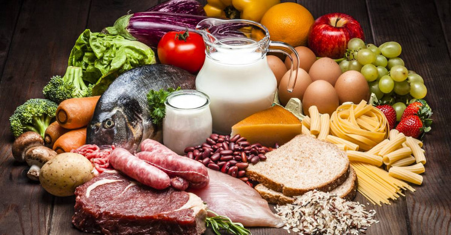

A importância dos nutrientes para o corpo
Comer uma grande variedade de alimentos que incluem uma variedade de nutrientes é a maneira mais fácil de ter uma dieta saudável.

Os nutrientes nos alimentos permitem que as células em nossos corpos executem suas funções necessárias. A citação a seguir, de um livro popular, descreve como os nutrientes que estão nos alimentos são essenciais para o nosso funcionamento físico.
"Os nutrientes são as substâncias nutritivas nos alimentos que são essenciais para o crescimento, desenvolvimento e manutenção das funções corporais. Significado essencial de que, se um nutriente não está presente, aspectos da função e, portanto, da saúde humana declinam. Quando a ingestão de nutrientes não atende regularmente às necessidades de nutrientes ditadas pela atividade celular, os processos metabólicos diminuem ou até param."
Perspectivas em Nutrição, Wardlow e Insel.
Em outras palavras, os nutrientes dão ao nosso corpo instruções sobre como funcionar. Nesse sentido, a comida pode ser vista como uma fonte de "informação" para o corpo.

Pensar em alimentos dessa forma nos dá uma visão da nutrição que vai além de calorias ou gramas, bons alimentos ou alimentos ruins. Essa visão nos leva a focar em alimentos que devemos incluir em vez de alimentos para excluir.
Em vez de ver a comida como o inimigo, olhamos para a comida como uma maneira de criar saúde e reduzir doenças, ajudando o corpo a manter a função.